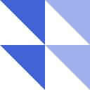
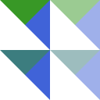

Composite Operations
The CompositeOperation type represents the Porter-Duff operators, or the modes of generalized alpha compositing.
The general form of the Porter-Duff equation is:
αo = αsrc × Fa + αb × Fb
co = αsrc × Fa × Csrc + αb × Fb × Cb
Co = co / αowhere:
αois the output alphaαsrcandαbare the source alpha and backdrop alphaFaandFbare defined by the operator in usecois the output color pre-multiplied with the output alphaαoCsrcandCbare the source color and backdrop colorCois the output color
Note that the "destination" means the "backdrop", not the "output" in this context.
The following two images are used as examples below.
| Destination (backdrop) | Source |
|---|---|
|  |
source-over
| Result | SVG |
|---|---|
ColorBlendModes.CompositeSourceOver — ConstantCompositeSourceOverA basic Porter-Duff operator with the fractional terms Fa = 1; Fb = 1 - αsrc. This means the simple alpha compositing.
source-atop
| Result | SVG |
|---|---|
|  |  |
ColorBlendModes.CompositeSourceAtop — ConstantCompositeSourceAtopA basic Porter-Duff operator with the fractional terms Fa = αb; Fb = 1 - αsrc.